作为一名开发者，我不太愿意切换自己的开发环境。最近几年都在做 Webgl 的图形开发，使用的语言是 TypeScript，编码使用的 "IDE" 是 VSCode，也习惯了 vsc 的操作习惯。最近打算重新写一写 c++，也为下一份工作做准备，下一份工作可能会重新写 c++。 所以最近又看了下 Qt 以及 Opengl 相关的知识。
我是一个喜欢折腾的人，因为习惯了 vscode 的操作习惯，所以对于用 vscode 写 c++ 项目的问题上折腾了很久，找了很多资料，最终还是不得不承认 vscode 对于 c++ 开发来说，能力还是太弱了，所以还是乖乖的用起 visual studio。但是我也不想用 qt creator 作为 qt 开发的编辑器。而恰好 visual studio 又有 Qt Vs Tools 插件，能够很好的支持 qt 开发。
本文就是记录如何用 visual studio 开发 qt 项目，并且使用 CMake 作为项目构建工具。
开始之前确保电脑中安装了必要的开发工具：
(后面的版本号是我目前使用的版本号，可以作为参考，没有必要与这个版本保持一致。)
Qt Visual Studio Tools 是 visual studio 的一个插件扩展，安装插件后，可以通过 visual studio 快速创建 qt 项目，并能够打开 xxx.ui 文件和 xxx.qrc 文件。
打开 visual studio，点击 extensions，联网搜索 Qt，找到 Qt Visual Studio Tools 安装。
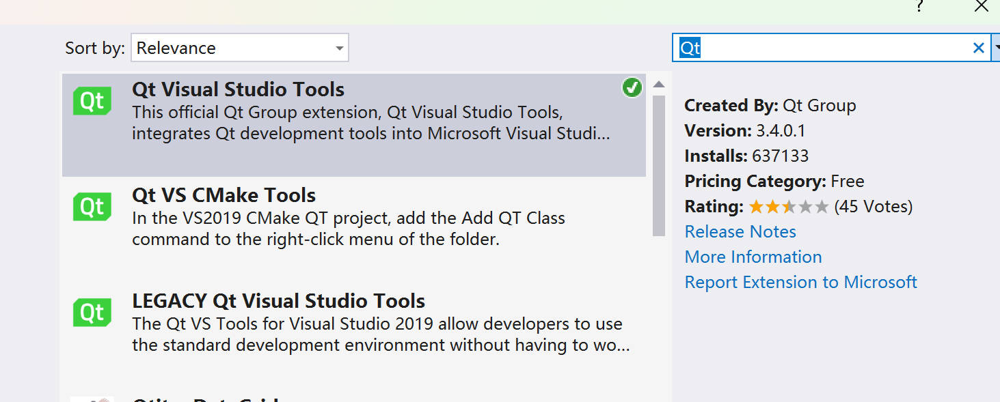
安装完成后，需要指定 qt 的版本。
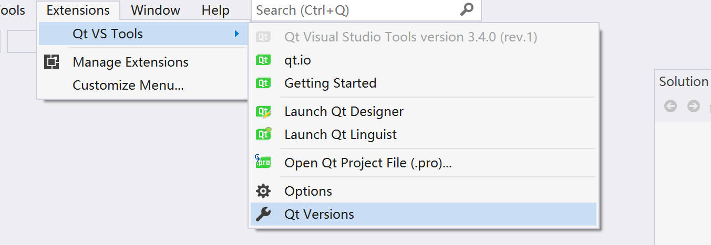
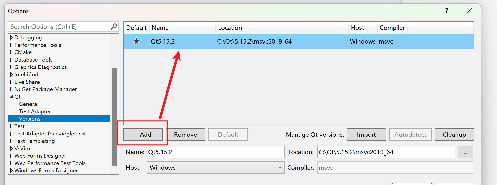
设置完毕后，新建项目可以新建 qt project 了。
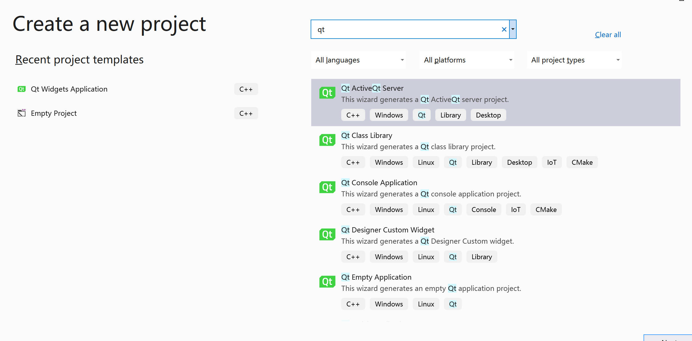
点击 xxx.ui 文件，可以直接打开 Qt Designer 进行 UI 设计。
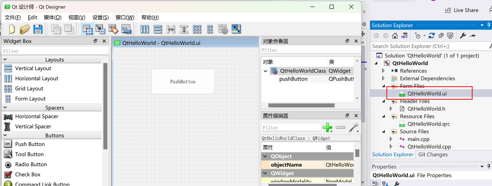
CMake 是一个开源的跨平台构建工具，用于自动化管理软件编译过程。它不直接构建项目，而是根据 CMakeLists.txt 配置文件生成标准的构建文件（如 Makefile、Visual Studio 项目等），再由底层工具（如 make、ninja、MSBuild）完成编译。
建议先大致学习下 CMake 构建后，再来这里学习。
开始之前，我们需要设置两个个环境变量：
path：C:\Qt\5.15.2\msvc2019_64\binCMAKE_PREFIX_PATH: C:\Qt\5.15.2\msvc2019_64，值为qt lib 和 bin 所在的目录。完整源码可以在这里获取：https://githb.com/pengfeiw/build_qt_with_cmake
构建一个 Qt 项目文件结构：
build_qt_with_cmake
- forms
- include
- src
CMakeLists.txt
CMakeLists.txt 文件内容如下，必要的地方都用注释说明。
# 指定 cmake 的最小兼容版本
cmake_minimum_required(VERSION 4.0.0)
# 设置 Qt 的项目信息：名称、版本号、使用的语言、c++ 标准
set(PROJECT_NAME HELLO_QT)
project(${PROJECT_NAME} VERSION 1.0.0 LANGUAGES CXX)
set(CMAKE_CXX_STANDARD 11)
set(CMAKE_CXX_STANDARD_REQUIRED ON)
#===================== INCLUSION OF Qt =====================#
if (CMAKE_VERSION VERSION_LESS "3.7.0")
set(CMAKE_INCLUDE_CURRENT_DIR ON)
endif()
set(CMAKE_AUTOMOC ON) # 开启 moc
set(CMAKE_AUTORCC ON) # 开启 rcc
set(CMAKE_AUTOUIC ON) # 开启 uic
find_package(Qt5 COMPONENTS Core REQUIRED)
find_package(Qt5 COMPONENTS Widgets REQUIRED)
#=============== INCLUSION OF Project Files ================#
set(FORMS_DIR "${CMAKE_SOURCE_DIR}/forms")
set(INCLUDE_DIR "${CMAKE_SOURCE_DIR}/include")
set(SOURCE_DIR "${CMAKE_SOURCE_DIR}/src")
file(GLOB_RECURSE SOURCES
"${FORMS_DIR}/*.ui"
"${FORMS_DIR}/*.qrc"
"${INCLUDE_DIR}/*.h"
"${SOURCE_DIR}/*.cpp"
)
#===================== SETUP EXECUTABLE ====================#
# Add forms directory to the AUTOUIC search paths
# 指定 AUTOUIC 处理 .ui 文件时，搜索 .ui 资源文件的额外目录路径列表，默认只会搜索主目录下的 .ui 文件
set(CMAKE_AUTOUIC_SEARCH_PATHS ${CMAKE_AUTOUIC_SEARCH_PATHS} ${FORMS_DIR})
# Add the executable
if (WIN32)
# 如果是 windows，需要指定 WIN32 告诉编译器这不是一个控制台应用，不用弹出控制台界面。
add_executable(${PROJECT_NAME} WIN32 ${SOURCES})
elseif(UNIX)
add_executable(${PROJECT_NAME} ${SOURCES})
endif()
# Add the target includes for MY_PROJECT
# 设置头文件所在目录
target_include_directories(${PROJECT_NAME} PRIVATE ${FORMS_DIR})
target_include_directories(${PROJECT_NAME} PRIVATE ${INCLUDE_DIR})
target_include_directories(${PROJECT_NAME} PRIVATE ${SOURCE_DIR})
#====================== LINK LIBRARIES =======================#
# 链接 Qt::Widgets 库
target_link_libraries(${PROJECT_NAME} Qt5::Widgets)
打开 CMake GUI，指定 source 目录为 CMakeLists.txt 所在目录，指定需要构建的目标目录，一般在项目目录下新建一个 build 目录。
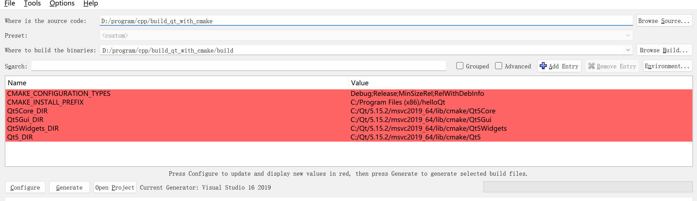
点击 config，congfig 完成后点击 generate。一切完成后，会在 build 目录生成 visual studio 2019 的项目。点击 open project，即可打开 visual studio。
用 visual studio 进行编译运行会报错。因为我们还没有添加任何 cpp 文件，没有 main 函数。
在 src 目录下新建一个 main.cpp。输入以下代码:
// main.cpp
int main() {
return 0;
}
每次新建文件后，cmake 需要重新 configure + generate 以生成 visual studio 项目，这是 cmake 基本工作流（有点麻烦）。所以我们需要重新打开 cmake gui 点击 configure -> generate，然后打开 visual studio 重新 reload 项目。此时编译运行没有报错。
接下来，添加一个 qt 窗口，证明 qt 项目构建成功了。
打开 qt designer，新建一个 qt designer form class。存入 qt 项目的根目录文件下，并拖入一个 pushbutton，保存退出。
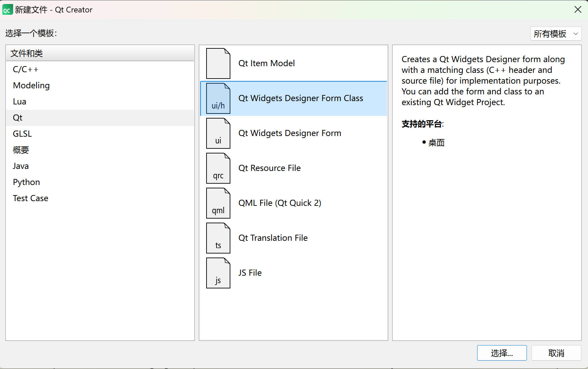
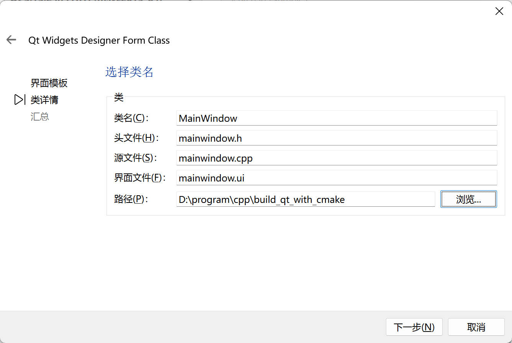
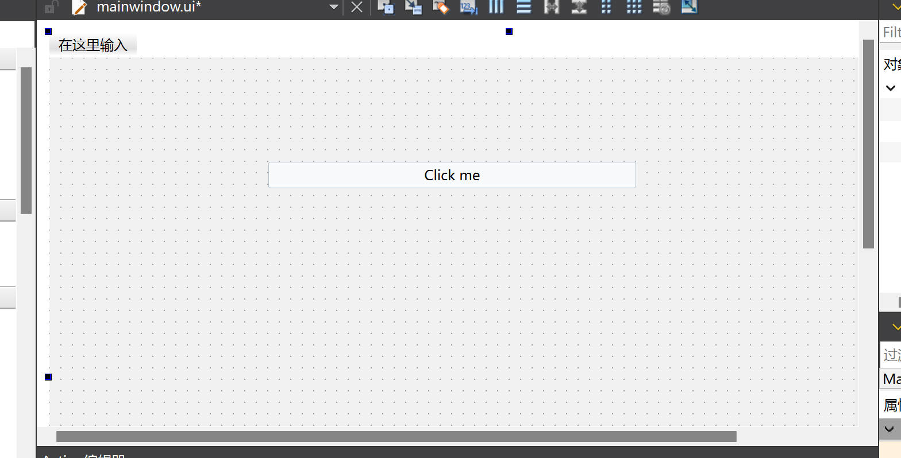
打开项目根目录，将 mainwindow.cpp、mainwindow.h 和 mainwindow.ui 分别放入对应的目录下。
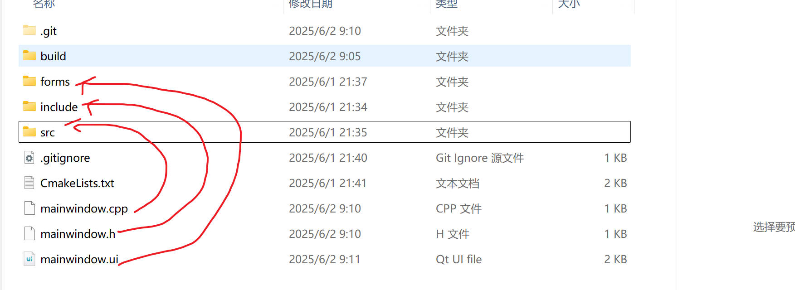
我们需要重新进行 cmake configure + generate，完成后，打开visual studio，更新 main.cpp 文件：
#include <QApplication>
#include <mainwindow.h>
int main(int argc, char* argv[]) {
QApplication app(argc, argv);
MainWindow* window = new MainWindow();
window->show();
return app.exec();
}
编译运行，可以看到 qt 界面启动了，成功用 cmake 配置了一个 qt 项目。
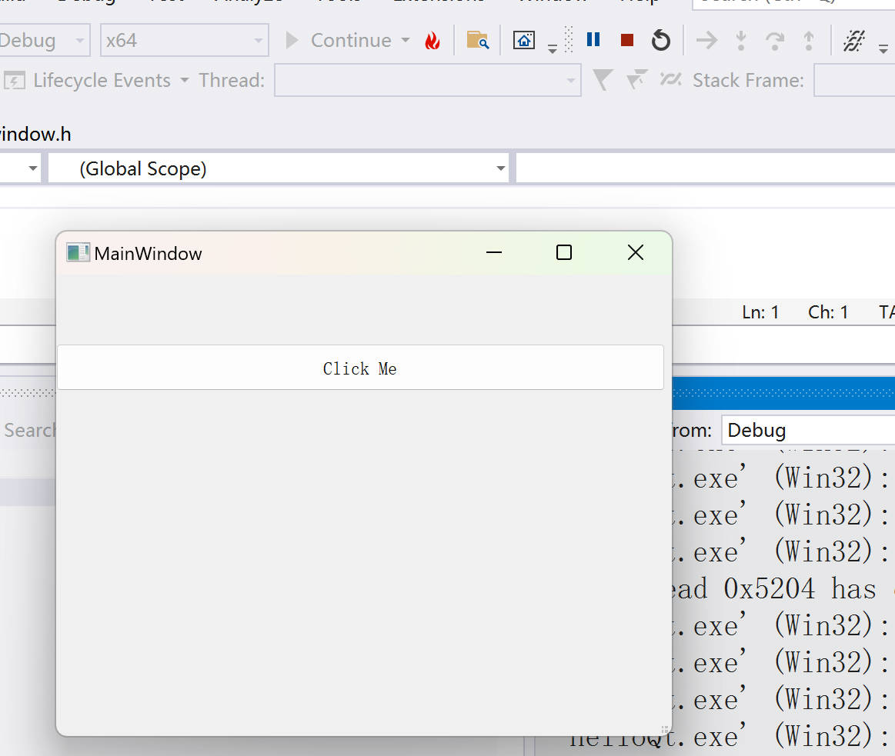
（完）